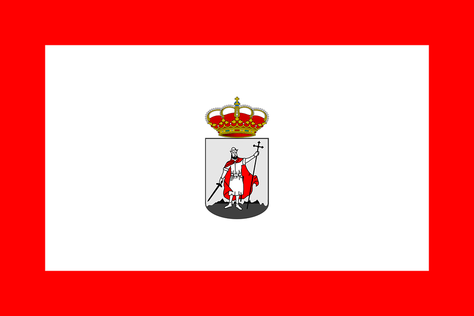
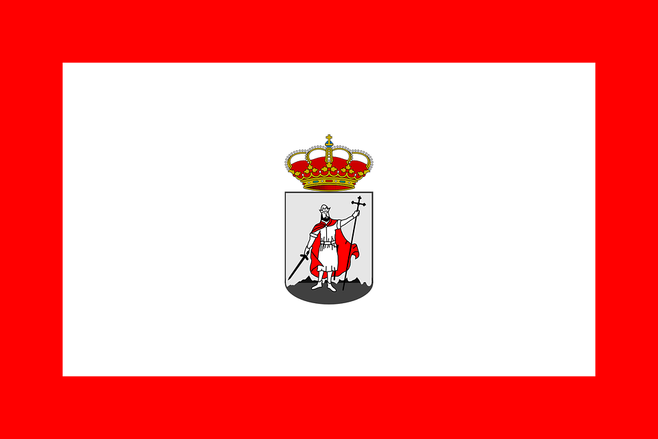

Gijón (en asturiano Xixón) es una ciudad española con la categoría histórica de villa. Es el único núcleo de población de la parroquia del mismo nombre. Su concejo denominación que reciben los municipios en el Principado de Asturias es el más poblado de la comunidad autónoma, con 267 706 habitantes en 2022.
 

Geográficamente, la ciudad y su término municipal se localizan junto a una bahía en la zona central de Asturias, a 28 km de Oviedo y 26 km de Avilés. Allí forman parte de una gran área metropolitana que abarca veinte concejos de la región. Esta área, vertebrada por una densa red de carreteras y ferrocarriles, contaba con una población de 835 053 habitantes en 2011, los cuales la convierten en la séptima de España. En la península ibérica, la villa y el concejo se sitúan en la parte central de la cornisa cantábrica y, a escala europea, en la zona sur del Arco Atlántico.
Desde su fundación en época romana, el desarrollo del núcleo urbano ha estado vinculado al de su puerto, que actualmente es líder en movimientos de graneles sólidos en España. Hasta fechas recientes, Gijón tuvo un carácter eminentemente industrial, lo que favoreció su gran crecimiento de los siglos XIX y XX. No obstante, durante las últimas décadas, la crisis de la siderurgia y el sector naval han llevado a la reconversión de su tejido productivo, transformando la ciudad en un centro turístico, universitario, comercial y de I+D+i. Así, además de contar con una red municipal de museos, alberga la Milla del Conocimiento Margarita Salas. Esta comprende el complejo cultural de la Universidad Laboral, un campus universitario y un parque científico y tecnológico.
La ciudad es conocida por antonomasia como «capital de la Costa Verde» y es asimismo capital de la provincia marítima de Gijón. Por el concejo discurre el Camino de Santiago en su ruta costera y en él tienen su sede el Consejo Consultivo del Principado de Asturias, la Radiotelevisión del Principado de Asturias y el Centro de Seguridad Marítima Integral de Salvamento Marítimo.
El clima de Gijón, determinado por la presencia del mar y la baja altitud del concejo, es un clima oceánico, con abundantes precipitaciones desde el otoño hasta los primeros días de la primavera, y un tiempo más estable y cálido en verano
| Parámetros climáticos promedio de Gijón | |||||||||||||
|---|---|---|---|---|---|---|---|---|---|---|---|---|---|
| Mes | Ene. | Feb. | Mar. | Abr. | May. | Jun. | Jul. | Ago. | Sep. | Oct. | Nov. | Dic. | Anual |
| Temp. max. abs.(ºC) | 23.6 | 23 | 27 | 28 | 31.8 | 36.4 | 31.4 | 30 | 34.6 | 30.4 | 26.1 | 25 | 36.4 |
| Temp. max. media (ºC) | 13.1 | 13.8 | 14.9 | 15.6 | 17.8 | 20.2 | 22.4 | 23.2 | 21.8 | 19.0 | 15.6 | 14.0 | 17.6 |
| Temp. media (ºC) | 4.7 | 5.4 | 6.6 | 8.1 | 10.9 | 13.6 | 16.0 | 16.2 | 14.1 | 11.0 | 7.6 | 5.8 | 10.0 |
| Temp. min. abs.(ºC) | -9.6 | -6.0 | -3.0 | -1.4 | 2.2 | 5.8 | 5.6 | 5.2 | 4.7 | 2.6 | -3.4 | -6.8 | -9.6 |
| Precipitación total (mm) | 94 | 85 | 74 | 93 | 79 | 47 | 45 | 54 | 70 | 104 | 120 | 104 | 971 |
| Días de precipitaciones (≥ 1 mm) | 12 | 11 | 10 | 12 | 11 | 7 | 6 | 7 | 8 | 11 | 12 | 12 | 121 |
| Horas de sol | 103 | 109 | 137 | 151 | 167 | 180 | 194 | 190 | 158 | 132 | 106 | 92 | 1721 |
| Fuente: Agencia Estatal de Meteorilogía | |||||||||||||
Según el padrón municipal de habitantes de 2019 (INE), el concejo tiene 271 780 habitantes, de los que 143 652 son mujeres y 128 128 son hombres. La parroquia de Gijón en sí cuenta con 257 441 habitantes. Gijón es la cuarta ciudad más envejecida de España, contando el 26,9% de la población con 65 años o más.
La población municipal creció de manera notable a lo largo del siglo xx, especialmente entre los años 1960 y 1980 periodo en el que se duplicó. A partir de la década de 1990 el crecimiento se estancó, al igual que sucedió a nivel nacional, si bien debido a la inmigración, proveniente tanto de otros concejos de Asturias como del resto de España, así como la inmigración del extranjero, el padrón volvió a crecer de forma significativa en los primeros años del siglo xxi. La siguiente gráfica refleja la evolución de los efectivos humanos de la ciudad durante la época estadística:
| Evolución demográfica del concejo de Gijón | |
|---|---|
| 1828 | 6.260 |
| 1842 | 16.558 |
| 1857 | 23.621 |
| 1877 | 30.591 |
| 1887 | 35.170 |
| 1900 | 47.544 |
| 1910 | 55.248 |
| 1920 | 57.573 |
| 1930 | 78.239 |
| 1940 | 101.341 |
| 1950 | 110.985 |
| 1960 | 124.714 |
| 1970 | 187.612 |
| 1981 | 255.969 |
| 1991 | 260.267 |
| 2001 | 260.267 |
| 2011 | 266.419 |
| 2021 | 268.896 |
Según el nomenclátor de 2019, la población del concejo se reparte en 22 parroquias (entidades colectivas de población). Como consecuencia del proceso de recuperación de los topónimos tradicionales iniciado por el Gobierno del Principado de Asturias en 2004, actualmente los nombres oficiales de las parroquias del concejo son los asturianos. El número de parroquias ha descendido debido al crecimiento de la ciudad de Gijón desde los años 1960, que hizo que se incorporaran al núcleo urbano los núcleos de la parroquia de Tremañes, en el padrón de 1981, y los de Jove, Roces y Somió, en el de 1996. Todo ello a pesar de que las densidades de población de dichas parroquias en el momento de la incorporación no pudieran considerarse como urbanas y, por tanto, no justificaran su inclusión.
| Parroquia | Población | Parroquia | Población | Parroquia | Población |
|---|---|---|---|---|---|
| Baldornón | 187 | Fresno | 528 | Porceyo | 701 |
| Bernueces | 1132 | Granda | 636 | Ruedes | 120 |
| Caldones | 409 | Huernes | 340 | Santurio | 253 |
| Cabueñes | 1457 | Lavandera | 353 | Serín | 277 |
| Cenero | 1427 | Leorio | 420 | Tacones | 134 |
| Deva | 702 | La Pedrera | 798 | Vega | 3449 |
| Fano | 219 | Paogo | 199 | Veriña | 541 |
| Gijón | 257 441 | ||||
Ciudad tradicionalmente industrial, la economía de Gijón ha sufrido grandes cambios a partir de las duras reconversiones del sector industrial desde la década de los setenta.
El despegue económico de Gijón se inició a finales del siglo xix, debido a la confluencia de varios factores:
El modelo industrial generado, típico de la primera Revolución Industrial, constaba por tanto de un fuerte sector secundario, con gran presencia de la industria metálica, siderúrgica, cerámica, vidrio y textil. El sector terciario, además de la actividad comercial generada por la ciudad, incluyó la incipiente actividad turística del Gijón de la época, que también aspiró a convertirse en una gran estación balnearia. Sin embargo no llegó a prosperar lo esperado debido al tardío enlace ferroviario que conectó a Asturias con la meseta.
La siguiente etapa de gran crecimiento económico de Gijón se produjo a finales de la década de 1960, debido a la construcción de la factoría de UNINSA (Ensidesa) y a la actividad del puerto y de los astilleros.
Tras una dura crisis y reconversión en los años ochenta, en la actualidad, el sector terciario es el más importante de la economía gijonesa, seguido del sector secundario (industrias siderúrgicas y metálicas). El peso del sector primario en la economía del municipio es prácticamente irrelevante.
En el este del concejo se sitúa la Milla del Conocimiento Margarita Salas, un conjunto de equipamientos empresariales, públicos, educativos y culturales que suponen una suma de más de 10 000 empleados, 170 empresas y más de 13 000 alumnos, siendo uno de los principales polos económicos de Asturias. Destaca el Parque Científico Tecnológico de Gijón, el Hospital de Cabueñes y el campus de Gijón, de la Universidad de Oviedo.